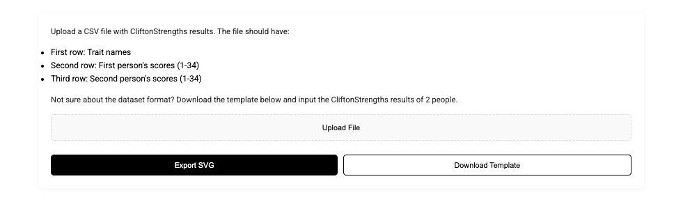

Data visualization for Gallup
Ideated and created working prototypes for data visualization of Clifton Strengths assessment results. Turning raw data into insights that are easy to understand, and intuitive to act on. The prototypes were functional allowing the team at gallup to test them with their own data, creating a deeper dialogie between udesigner and stakeholder.
Strengths assessment results need to make sense for any team
that uses the test.
Raw scores and dense reports don’t help teams act. The goal was clear, intuitive visualizations so any group could see compatibility, trends, and gaps—and use them for team building and assessment.
Visualizations were designed to analyze compatibility at various levels.

Scrollytelling first—NYT style.
Create narratives from test data so insights are meaningful and digestible. Present them in a delightful and engaging way to convince stakeholders that this is worth pursuing
Functional prototypes with real data.
Making the prototypes functional and allowing users to upload their own CSV data is what made them hands-on for the executive team—they could try different visualization styles with real Strengths data. Several demos:
Pairwise comparisons with a bar chart
Side-by-side bars make it easy to compare two people’s Strengths profiles and spot alignment or gaps at a glance.
Seeing team trends on a heatmap
Color-coded cells show how strengths are distributed across the team so patterns and clusters stand out.
Comparing individual to team compatibility with a scatterplot
Plot one person against the team to see where they fit and how their strengths relate to the group.
Comparing compatibilities across scatterplots
Multiple scatterplots let you compare compatibility across different pairs or dimensions in one view.
The executive team could test and compare visualization methods with real data.
Because the prototypes were functional and accepted real uploads, they became truly hands-on—giving Gallup a clear path to choose which visualizations work best for any team using the assessment.